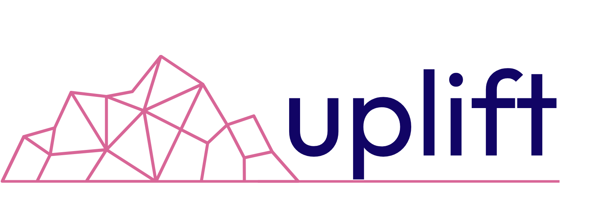

Uplift Mentorship Program
Fall 2026 · Mentor Meetings
Discover → Act → Roadmap
Your three mentor meetings each have a job. Whether these are your only three meetings or the first three of many, this arc takes you from context to action to a plan that outlasts the program. One hour each, logged in your portal, AI note-taker running.
Meeting 1 · Within 7 days of your match
Discover
The job: context and trust. Pick the problem worth your hours together.
Bring
- Your goals reflection from the portal
- Where the company actually is: traction, runway, blockers
- The one decision you keep circling
Leave with
- One focus area you both agree matters most
- What winning looks like by November
- Your next meeting on the calendar
Meeting 2 · Within 10 days of Meeting 1
Act
The job: turn Discover into a move. Advice becomes action here.
Bring
- What you tried since your previous meeting, including what flopped
- Real numbers, real customer conversations
- The obstacle that surprised you
Leave with
- One concrete commitment with a date on it
- An experiment, a decision, or an intro your mentor can make
- A clear picture of what to measure before your next meeting
Meeting 3 · Suggested by October 23
Roadmap
The job: zoom out. Build the 90-day plan that runs past graduation.
Bring
- Results from your Act commitment
- An honest read on what’s changed since your Discover meeting
- Your biggest open question for the next quarter
Leave with
- Your next three moves, in order
- The signals that tell you it's working
- An agreement on staying in touch, on your terms
Why start strong? Getting Discover, Act, and Roadmap done inside your first few weeks means you're not still getting oriented halfway through. You walk into the second half of the program already knowing your focus, your mentor, and your plan, so you can move with more intentionality instead of figuring it out as you go.
Minimum
Discover
Act
Roadmap
6 meetings
Discover
Act
Roadmap
Act
Act
Act
9 meetings
Discover
Act
Roadmap
Act
Act
Act
Act
Act
Act
Discover and Roadmap stay the spine at meeting 1 and 3, no matter your total. Every meeting after Roadmap is another Act, going deeper on the work between milestones. Sessions four and beyond count toward your tier commitment and get logged the same way.
Your Roadmap is what you bring to OverdriveAI on Oct 27, your launch pad. Be a little uncomfortable. Share the ugly baby before it's ready. Then launch into Overdrive. (Wink, wink.)